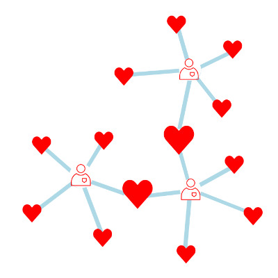

<!-- Toolbar -->
<mat-toolbar color="primary" class="app-header">
  <span>
    
  
    <a href="." class="positronx">Help to Health</a>
    <a mat-button routerLink="how-it-works-volunteer" routerLinkActive="active">I'm a Volunteer!</a>
    <a mat-button routerLink="how-it-works-organisation" routerLinkActive="active">I'm an Organisation!</a>
  </span>
  <span class="nav-tool-items">
    <a mat-button routerLink="login" routerLinkActive="active">Log in</a>
    <a mat-button mat-raised-button routerLink="register" routerLinkActive="active">Register as Volunteer</a>
  </span>
  
</mat-toolbar>

<router-outlet></router-outlet>